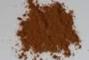

|
|
(For further information on spectroscopy, see:
http://speclab.cr.usgs.gov)
TITLE: Goethite WS220 DESCRIPT
DOCUMENTATION_FORMAT: MINERAL
SAMPLE_ID: WS220
MINERAL_TYPE: Hydroxide
MINERAL: Goethite
FORMULA: alpha-FeO(OH)
FORMULA_HTML: alpha-FeO(OH)
COLLECTION_LOCALITY: Kent, Connecticut
ORIGINAL_DONOR: Wards Natural Science Inc.
CURRENT_SAMPLE_LOCATION: USGS Denver Spectroscopy Laboratory
ULTIMATE_SAMPLE_LOCATION: USGS Denver Spectroscopy Laboratory
SAMPLE_DESCRIPTION:
Polymorphous with Akaganeite, Feroxyhyte, and Lepidocrocite.
IMAGE_OF_SAMPLE:

END_SAMPLE_DESCRIPTION.
XRD_ANALYSIS:
40 kV - 30 mA, 7.3-9.5 keV
File: gotht220_mdi, *.out (smear mount on quartz plate)
Found: quartz, minor goethite
Comment: Superbly sharp quartz reflections of moderate overall
intensity indicates excellent crystallinity. Very weak, broad
goethite reflections indicate poor crystallinity and possible low abundance
(compare with "pure" goethite, GDS-134). Amorphous material may be
present.
END_XRD_ANALYSIS.
COMPOSITIONAL_ANALYSIS_TYPE: None # XRF, EM(WDS), ICP(Trace), WChem
COMPOSITION_TRACE: None
COMPOSITION_DISCUSSION:
None.
END_COMPOSITION_DISCUSSION.
MICROSCOPIC_EXAMINATION:
mode:
60 vol% quartz
20 vol% large goethite grains
20 vol% small goethite grains
Bimodal goethite grain size distribution:
mode 1: average grain size= 50 µm @ 50 vol%
mode 2: average grain size= 10 µm @ 50 vol%
average grain size= 36 µm
quartz average grain size= 75 µm
Significant quartz contamination, quartz is 50% coated by goethite. Large goethite grains are 50% coated with smaller goethite grains. High relief, non-fibrous, platy (lepidocrocite?). Slight red pleochroism. G. Swayze.
The high quartz content reduces the strength of the saturated UV-Vis absorption bands, otherwise spectrally pure. R. Clark
END_MICROSCOPIC_EXAMINATION.
SPECTROSCOPIC_DISCUSSION:
END_SPECTROSCOPIC_DISCUSSION.
SPECTRAL_PURITY: 1c2c3d4_ # 1= 0.2-3, 2= 1.5-6, 3= 6-25, 4= 20-150 microns
| LIB_SPECTRA_HED: | where | Wave Range | Av_Rs_Pwr | Comment |
|---|---|---|---|---|
| LIB_SPECTRA: | splib04a r 1813 | 0.2-3.0µm | 200 | g.s.= 36 µm |
| LIB_SPECTRA: | splib05a r 2891 | 0.2-3.0µm | 200 | g.s.= |
| LIB_SPECTRA: | splib06a r 8392 | g.s.= | ||
| LIB_SPECTRA: | splib06a r 8404 | g.s.= |
{kind=link}